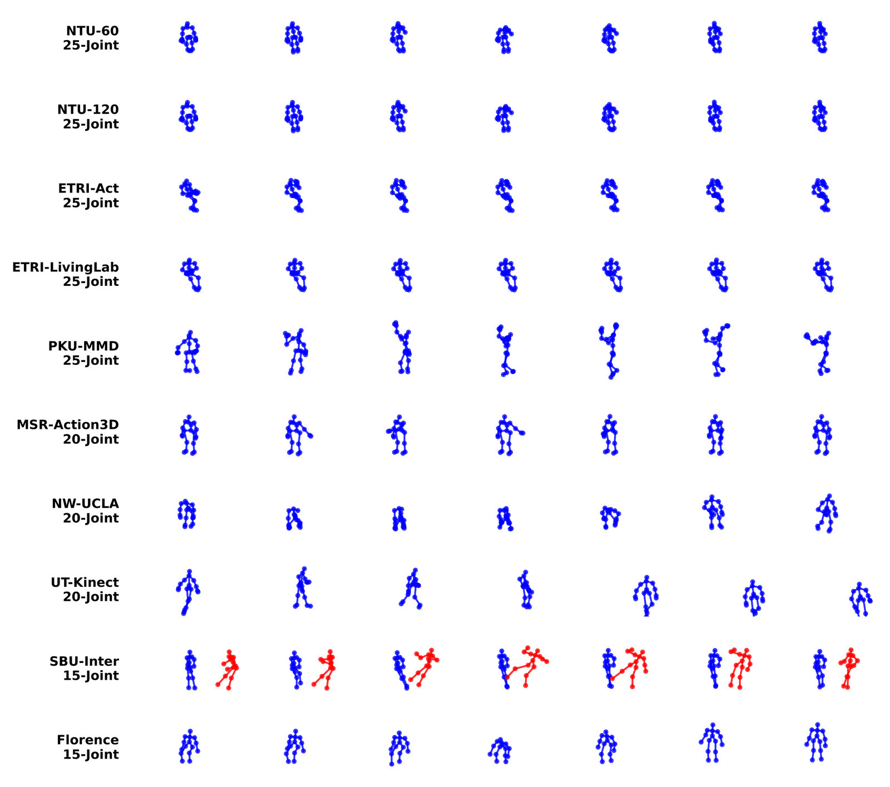

One encoder for any skeleton sensor
One set of weights for 25-, 20- and unseen 15-joint skeletons from ten datasets, instead of one model per sensor or dataset.

Paper figures
The learned Canonical Joint Slots in t-SNE, the leakage-free NTU evaluation protocol, and normalized samples from the ten datasets.




Ten datasets Table 14
| Dataset | Tracker | Joints | Classes | Samples | Evaluation Setting |
|---|---|---|---|---|---|
| NTU-60 | Kinect v2 | 25 | 60 | 56,880 | Pre-train & Downstream |
| NTU-120 | Kinect v2 | 25 | 120 | 114,480 | Pre-train & Downstream |
| PKU-MMD | Kinect v2 | 25 | 51 | 7,096 | Pre-train & Downstream |
| ETRI-Act | Kinect v2 | 25 | 55 | 112,620 | Pre-train & Downstream |
| ETRI-LivingLab | Kinect v2 | 25 | 55 | 8,605 | Pre-train & Downstream |
| MSR-Action3D | Kinect v1 | 20 | 20 | 567 | Pre-train & Downstream |
| NW-UCLA | Kinect v1 | 20 | 10 | 1,494 | Pre-train & Downstream |
| UT-Kinect | Kinect v1 | 20 | 10 | 199 | Pre-train & Downstream |
| SBU-Inter | Custom Tracker 1 | 15 | 8 | 282 | Unseen (OOD) |
| Florence | Custom Tracker 2 | 15 | 9 | 215 | Unseen (OOD) |
Quantitative results
67.1% on PKU-MMD with SOfA-L (+6.8 points over the previous best), 92.9% on NW-UCLA, and 91.7% / 97.0% on the unseen 15-joint Florence and SBU-Inter.
| Method | Publication | NTU-60 | NTU-120 | PKU-MMD | ||
|---|---|---|---|---|---|---|
| X-Sub | X-View | X-Sub | X-Set | X-Sub | ||
| Sensor-Specific Representation | ||||||
| GL-Transformer | ECCV'22 | 76.3 | 83.8 | 66.0 | 68.7 | – |
| CPM | ECCV'22 | 78.7 | 84.9 | 68.7 | 69.6 | 48.3 |
| CMD | ECCV'22 | 79.8 | 86.9 | 70.3 | 71.5 | 43.0 |
| AimCLR | AAAI'22 | 74.3 | 79.7 | 63.4 | 63.4 | – |
| HYSP | ICLR'23 | 78.2 | 82.6 | 61.8 | 64.6 | – |
| HaLP | CVPR'23 | 79.7 | 86.8 | 71.1 | 72.2 | 43.5 |
| ActCLR | CVPR'23 | 80.9 | 86.7 | 69.0 | 70.5 | – |
| RVTCLR | ICCV'23 | 74.7 | 79.1 | – | – | – |
| SkeletonMAE | ICMEW'23 | 74.8 | 77.7 | 72.5 | 73.5 | 36.1 |
| MAMP | ICCV'23 | 84.9 | 89.1 | 78.6 | 79.1 | 53.8 |
| PTSL | AAAI'23 | 77.3 | 81.8 | 66.2 | 67.7 | 49.3 |
| S-JEPA | ECCV'24 | 85.3 | 89.8 | 79.6 | 79.9 | 53.5 |
| IGM | ECCV'24 | 86.2 | 91.2 | 80.0 | 81.4 | – |
| MacDiff | ECCV'24 | 86.4 | 91.0 | 79.4 | 80.2 | – |
| HSP | CVPR'25 | 80.7 | 88.0 | 71.0 | 73.2 | 48.9 |
| USDRL | AAAI'25 | 85.2 | 91.7 | 76.6 | 78.1 | 54.4 |
| GFP | ICCV'25 | 85.9 | 92.0 | 79.1 | 80.3 | 56.2 |
| AMR | CVPR'26 | 87.4 | 92.3 | 81.1 | 81.9 | 60.3 |
| Sensor-Unified Representation | ||||||
| SOfA (Ours) | 85.7 | 92.1* | 79.2 | 80.4 | 65.4 | |
| SOfA-L (Ours) | 87.0 | 92.6* | 79.5 | 82.0 | 67.1 | |
X-View*: leakage-free evaluation on the official NTU-60 X-View test set without the 5,392 sequences that also appear in the pre-training corpus (13,568 remain; Fig. 5).
(a) ETRI-Act (25-joint)
| Methods | ETRI-Act |
|---|---|
| Fully-supervised | |
| IndRNN | 73.9 |
| Beyond Joint | 79.1 |
| SK-CNN | 83.6 |
| ST-GCN | 86.8 |
| Ensem-NN | 83.0 |
| MANs | 82.4 |
| HCN | 88.0 |
| FSA-CNN | 90.6 |
| Un-supervised (SSL) | |
| SOfA (Ours) | 87.9 |
(b) NW-UCLA (20-joint)
| Methods | NW-UCLA |
|---|---|
| Sensor-Specific | |
| LongT-GAN | 74.3 |
| P&C | 84.9 |
| MCAE-MP | 84.9 |
| SeBiReNet | 80.3 |
| Colorization | 91.1 |
| GL-Transformer | 90.4 |
| Masked-Color | 92.0 |
| Sensor-Unified | |
| SOfA (Ours) | 92.9 |
(a) Florence (15-joint)
| Methods | Florence |
|---|---|
| Seen + Fully-supervised | |
| Seidenari et al. (2013) | 82.0 |
| Devanne et al. (2014) | 87.0 |
| Vemulapalli et al. (2014) | 90.9 |
| HarSkel | 94.4 |
| Unseen + Sensor-Specific | |
| SkeletonMAE | 66.8 |
| MAMP | 73.7 |
| Unseen + Sensor-Unified | |
| SOfA (Ours) | 91.7 |
(b) SBU-Inter (15-joint)
| Methods | SBU-Inter |
|---|---|
| Seen + Fully-supervised | |
| Co-LSTM | 90.4 |
| ST-LSTM | 93.3 |
| VA-LSTM | 97.2 |
| GCA | 94.9 |
| LSTM-IRN | 98.2 |
| IGFormer | 98.4 |
| ISTA-Net | 98.5 |
| Unseen + Sensor-Specific | |
| SkeletonMAE | 73.1 |
| MAMP | 80.2 |
| Unseen + Sensor-Unified | |
| SOfA (Ours) | 97.0 |
Linear evaluation with the joint modality alone, no multi-stream ensemble. Baselines are trained separately for each dataset; SOfA uses the same weights for every benchmark.
Ablations Tables 5 and 13
| Modules | 25-Joint Datasets | 20-Joint Datasets | ||||
|---|---|---|---|---|---|---|
| CJS | SJE | NTU-60 | NTU-120 | PKU-MMD | NW-UCLA | UT-Kinect |
| ✗ | ✗ | 75.2 | 70.7 | 50.9 | 68.9 | 77.0 |
| ✓ | ✗ | 84.9 | 78.7 | 64.7 | 72.3 | 80.0 |
| ✗ | ✓ | 76.4 | 71.4 | 52.3 | 86.7 | 91.0 |
| ✓ | ✓ | 85.7 | 79.2 | 65.4 | 92.9 | 97.0 |
Removing CJS lowers accuracy on every benchmark (average drop of 8.48%); removing SJE hurts the 20-joint datasets most (NW-UCLA 92.9% → 72.3%).
| Slots | 25-Joint Datasets | 20-Joint Datasets | GFLOPs | |||
|---|---|---|---|---|---|---|
| CJS | NTU-60 | NTU-120 | PKU-MMD | NW-UCLA | UT-Kinect | Inference |
| 0 | 76.4 | 71.4 | 52.3 | 86.7 | 91.0 | 3.60 |
| 5 | 85.7 | 79.2 | 65.4 | 92.9 | 97.0 | 4.30 |
| 10 | 85.5 | 79.0 | 64.5 | 92.7 | 98.0 | 5.41 |
| 15 | 85.3 | 78.9 | 63.5 | 91.8 | 97.0 | 6.55 |
Five slots give the best overall accuracy; 10 or 15 slots cost more GFLOPs and lower most benchmarks.
Efficiency and scaling Tables 8 and 7
| Method | Tokens | GFLOPs | PKU-MMD | |
|---|---|---|---|---|
| T × J | Train | Inference | X-Sub | |
| Sensor-Specific | ||||
| SkeletonMAE | 30 × 25 | 19.67 | 28.32 | 36.1 |
| MAMP | 30 × 25 | 19.67 | 28.32 | 53.8 |
| S-JEPA | 30 × 25 | 47.99 | 28.32 | 53.5 |
| GFP | 30 × 25 | 4.18 | 28.32 | 56.2 |
| Sensor-Unified | ||||
| SOfA | 8 × (25+5) | 8.60 | 4.30 | 65.4 |
| SOfA-L | 8 × (25+5) | 14.90 | 7.45 | 67.1 |
SOfA needs 4.30 inference GFLOPs, a 6.59× reduction from the 28.32 GFLOPs of the MAE-based baselines.
| Method | Modality | NTU-60 | NTU-120 | PKU-MMD | ||
|---|---|---|---|---|---|---|
| X-Sub | X-View | X-Sub | X-Set | X-Sub | ||
| SOfA | J | 85.7 | 92.1* | 79.2 | 80.4 | 65.4 |
| SOfA (J = 30) | J | 85.5 | 91.9* | 79.0 | 80.1 | 65.6 |
| SOfA-L | J | 87.0 | 92.6* | 79.5 | 82.0 | 67.1 |
The deeper and wider SOfA-L (12 layers, D = 384) improves every benchmark; the synthetic 30-joint topology performs on par with the standard 25 joints. X-View*: leakage-free NTU-60 X-View test subset (see Table 2).
Semi-supervised, retrieval and 20-joint benchmarks Tables 9–12
| Methods | NTU-60 | |
|---|---|---|
| X-Sub | X-View | |
| Sensor-Specific | ||
| CPM | 56.7 | 57.5 |
| CMD | 50.6 | 53.0 |
| HaLP | 46.6 | 48.7 |
| HiCo | 54.4 | 54.8 |
| UmURL | 58.1 | 58.3 |
| SkeletonMAE | 54.4 | 54.6 |
| MAMP | 66.0 | 68.7 |
| S-JEPA | 67.5 | 69.1 |
| USDRL | 57.3 | 60.7 |
| GFP | 71.8 | 72.9 |
| Sensor-Unified | ||
| SOfA | 71.6 | 74.2* |
| Methods | NTU-60 | |
|---|---|---|
| X-Sub | X-View | |
| Sensor-Specific | ||
| LongT-GAN | 39.1 | 48.1 |
| P&C | 50.7 | 76.3 |
| ISC | 62.5 | 82.6 |
| HaLP | 65.8 | 83.6 |
| HiCo | 68.3 | 84.8 |
| MAMP | 62.0 | 70.0 |
| GFP | 70.9 | 87.1 |
| Sensor-Unified | ||
| SOfA | 72.1 | 86.8* |
| Methods | MSR-Action3D |
|---|---|
| Fully-supervised | |
| HON4D | 82.2 |
| Rahmani et al. | 82.7 |
| Tran et al. | 84.5 |
| Un-supervised | |
| SOfA | 82.2 |
| Methods | UT-Kinect |
|---|---|
| Fully-supervised | |
| Xia et al. | 90.9 |
| Devanne et al. | 91.5 |
| Wang et al. | 96.5 |
| Un-supervised | |
| SOfA | 97.0 |
With 1% of the labels, SOfA is best on X-View and 0.2 points below GFP on X-Sub; in retrieval it is best on X-Sub (72.1%). On UT-Kinect it surpasses all compared fully supervised methods (97.0% vs. 96.5%). X-View*: leakage-free NTU-60 X-View test subset (see Table 2).
Comparison of learning paradigms Table 1
| Property | Standard SSL | HSP (CVPR'25) | SOfA (Ours) |
|---|---|---|---|
| Cross-Sensor Capability | ✗ | Intra-scene (Paired) | Universal (Unpaired) |
| Alignment Strategy | ✗ | Skeletal interpolation | Canonical Joint Slots + Semantic Joint Embedding |
| Sensor Flexibility | ✗ | Pre-defined 2D-3D pair | Arbitrary 3D sensor |
| Dataset Dependency | Homogeneous | Heterogeneous (Paired) | Heterogeneous (Independent) |
| Representation Scope | Domain-specific | Multi-modal fusion | Generalist foundation |
Any skeleton in, canonical slots out
![SOfA framework. Skeleton sequences sampled from various sensors are patchified and given a Semantic Joint Embedding. The resulting patch tokens Z_p are combined with temporally repeated Canonical Joint Slots Z_c. The teacher network receives the full input; the student network receives a masked input and its ViT encoder feeds a canonical head and a DINO head. The canonical loss L_Cano makes the student fill the slots like the teacher, and the DINO loss aligns the class tokens; the teacher is an EMA of the student. The representation W, made of the class token and the canonical tokens, is used for downstream tasks.](static/images/framework_full.jpg)
- 01Canonical Joint Slots. A fixed set of learnable slots is filled from any sensor’s joint tokens by masked self-attention; padded joints are masked out.
- 02Semantic Joint Embedding. Joint names such as “Left Wrist” pass through a pretrained T5 text encoder in place of absolute positional embeddings.
- 03Teacher–student pre-training. From a 90%-masked view, the student matches the EMA teacher’s slot (LCano) and class-token (LDINO) outputs.
BibTeX
@article{do2026sofa,
title={One for All: Generalist Foundation Model for Cross-Sensor Skeleton Representation Learning},
author={Do, Jeonghyeok and Chen, Yun and Kim, Munchurl},
journal={arXiv preprint arXiv:2609.07078},
year={2026}
}@inproceedings{do2026less,
title={Less is More: Compact-Token Masked Feature Prediction for Skeleton Representation Learning},
author={Do, Jeonghyeok and Chen, Yun and Youk, Geunhyuk and Kim, Munchurl},
booktitle={Advances in Neural Information Processing Systems (NeurIPS)},
year={2026}
}